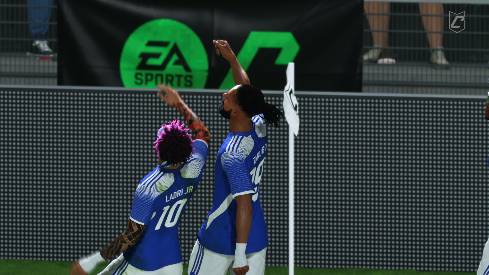

Tw Xerez
Tw Xerez
Noche agridulce para Tw Xerez en la KL Pro League

De la confianza a los nervios, y de los nervios a la derrota.
El pasado 3 de julio se celebró la segunda jornada de la KL Pro League, en la que Tw Xerez vivió una noche de emociones encontradas. Un primer partido con gran solidez dejó paso a una derrota inesperada que marcó el cierre de la jornada.
Como en casa, en ningún sitio
El primer encuentro de la noche, disputado a las 22:30, se presentaba como asequible para el conjunto jerezano. El equipo mostró un juego táctico muy sólido, imponiéndose con autoridad y dejando buenas sensaciones tanto en defensa como en ataque.
No todo podía salir bien
El segundo partido comenzó de manera inmejorable: El Ladri Jr adelantó a Tw Xerez en el minuto 11 tras una gran jugada colectiva. A pesar de mantener el dominio y generar ocasiones, un gol de Tw Granada en el minuto 41 igualó el marcador justo antes del descanso, lo que supuso un duro golpe para los azulinos.
En la segunda mitad, el equipo no logró recuperar su identidad táctica. El juego se tornó nervioso y desorganizado, y en el minuto 66, Tw Granada se adelantó en el marcador, sellando una derrota difícil de digerir para los jerezanos.
Mirando al futuro con firmeza
Pese a la derrota, el club confía en que esta experiencia fortalecerá al equipo de cara a futuros compromisos. Tw Xerez mantiene su máximo nivel de implicación con la competición y luchará hasta el final por alcanzar las metas más ambiciosas.